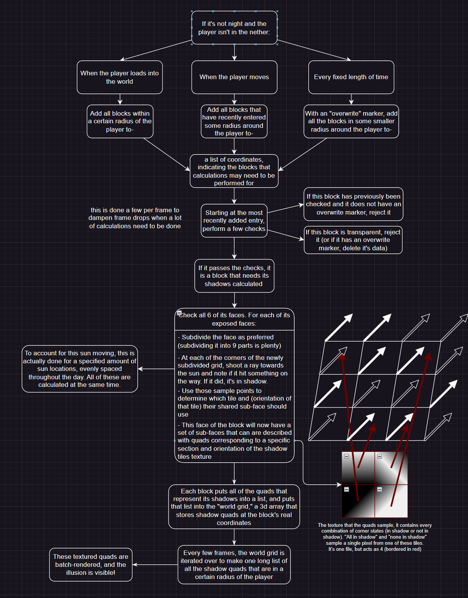
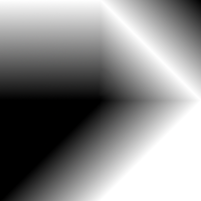

One day I had the stupid idea to add shadows to Minecraft through scripting. Stupid, especially because you can't write shaders in scripting.
But one thing you can do in scripting is draw three-dimensional textured quadrilaterals into the game. So I made do with what I had. The idea was to render quads into the world, layered on top of the existing terrain, that creates the illusion of things being blocked from the sun.
I've drawn a diagram to illustrate my solution:
 The shadow tiles texture.
Every part of this project was hard, and each one of the text boxes you see above came with a great deal of head-scratching. Dealing with such a huge amount of data was a difficult task, and figuring out how to make it possible to be real-time at all was quite the puzzle. But, I'm proud of it, and I think it turned out well.
Performance mode runs at almost the same speed as without the mod enabled.
Balanced drops it from 120fps to
85fps. High drops it from 120fps to 40fps.
Cinematic drops it from 120fps to 20fps with noticeable frame
drops.